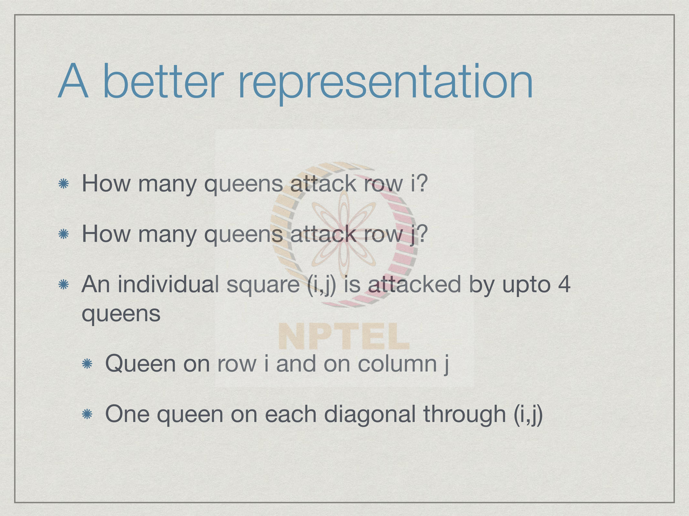
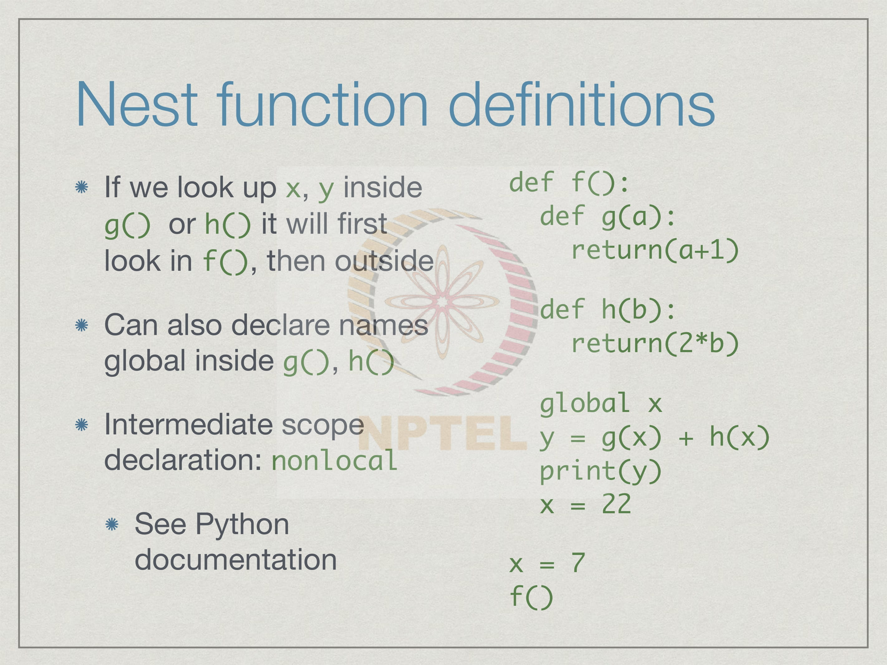
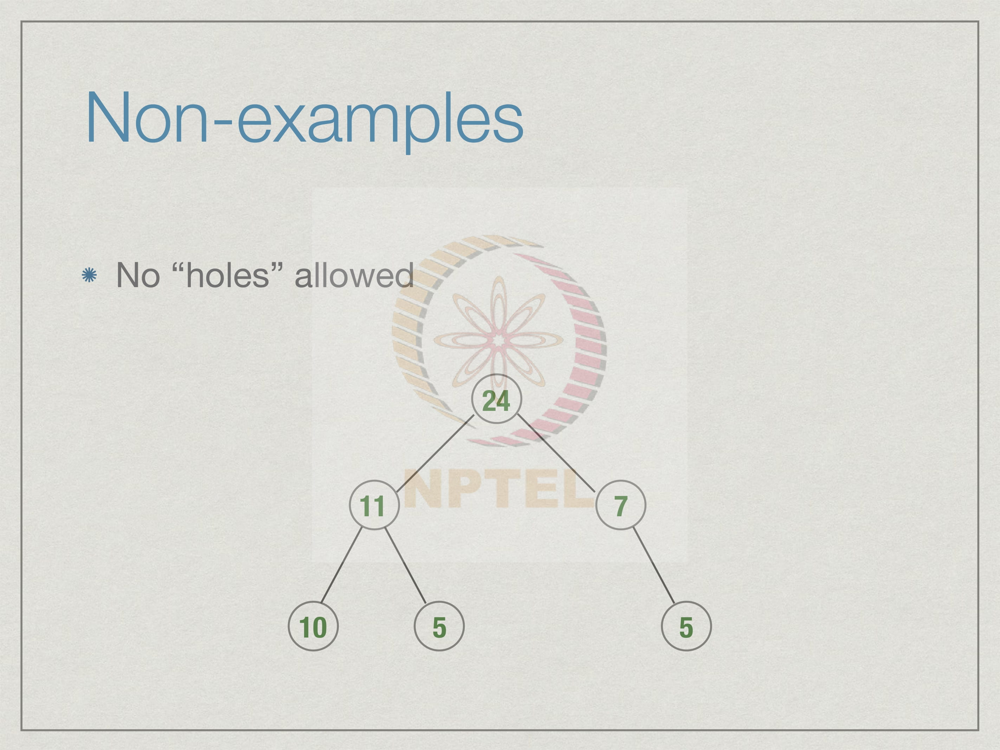
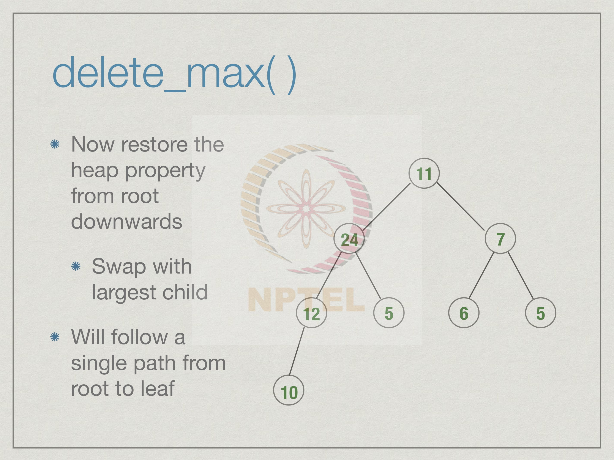

Week 6
6.1 Backtracking, N queens
For many problems, we have to search through a set of possibilities in order to find the solution.
There is no clear solution that we can directly reach. So, we have to systematically search for it. We keep building candidate solutions one step at a time. Now it might be that the solution that we are trying to get does not work. So, we hit a dead end, and then we undo the last step and try the next option. Imagine for instance if you are solving a Sudoku. So, you have a grid and then you start filling up things and there are some points you realize that there is nothing you can put here. Then you go back and you have to change something you did before. So, we have to backtrack, we have to go forwards trying to solve the problem; and at some point when we realize that we are stuck we cannot solve the problem again, we have to go back and change something we have done before and try something else.
One of the classic problems of this kind is called Eight queens problem. The problem is to place 8 queens on a chess board so that none of them attack each other. Now, if you have ever played chess, you would know that the queen is a very special piece it can move any number of squares along a row, column or diagonal - for instance, if we place the queen here, in the third row and the third column, then it could move anywhere upward down the third column anywhere left or right on the third row, and along the two diagonals on which the square three comma three lies. Since it can move along these columns it can also capture any piece that lies along these rows. The queen is said to attack all these squares. The squares to which the queen can move are said to be attacked by the queen. So, our goal is to place queens so that, they do not attack each others, so if we have a queen here then we cannot put another queen in any of the red squares, we have to put it somewhere else. For instance we could put a new queen; say for instance here this would be ok; or here. And then, it if I put a queen here in turn it will attack more pieces like, it will attack these squares and you rule out some more options so I will not be able to place queens there and so on. So, we want to see if we can place 8 queens. Now we cannot place more than 8 queens; because, there are only 8 rows if you place 9 queens, 2 will be in the same row or the same column and the same column. They will have to attack each other. So, 8 is clearly the limit, the question is whether we can actually put 8?
So, we can generalize this question and ask not for 8, but N. Supposing, I have a
chessboard in which there are N rows and N columns. Can I place N queens on such a
chessboard? Now for N equal to one the question is trivial, because you only have to put
1 queen on 1 square. Now, it is easy to see that N equal to 2 is impossible because, if I
have 2 squares and wherever, I put a queen say here it will attack all the remaining
squares. No matter where I put the queen, every other square will be on the row, column
or diagonal of that queen.
And so there is no possibility of putting a second queen. It turns out that three is also
impossible. Supposing we start by putting a queen in the top left corner then we will see
that it blocks out the first column, the first row and the main diagonal. This leaves two
slots open for the second queen, but wherever we put, whichever of the two we put, it
will block the other one.
Once we put a queen in one of those slots the other one is on the same diagonal and there
is no free slot for the third queen. So, just by exhaustive analysis we can show that, n
equal to three is actually impossible. For N equal to 4 for 4 a 4 by 4 board, it does turn
out to be possible. We should not start at the corner, but one of the corners. Supposing we
put it in the second column, then we get this pattern of block squares.
Then we can find an empty slot on the second row right at the end. So, we put a queen
there it blocks of certain of some more squares in the last column and in that diagonal,
but this still leaves one slot in the third row, unfortunately the third queen does not block
the last two slot on the fourth row and we have this kind of symmetric pattern where
everything is one of the corner in which none of the queens attack each other.
Now, it turns out that once we cross N equal to 4, for 5, 6, 7, 8, you can show that there
is always a solution possible. Our task is to find such a solution. How do we find a
solution for N greater than or equal to 4?
So, as you observed, the first of first thing you know is that there can be exactly one queen in each row and in each column because queens attack the column and row on which they lie. If we have two queens on the same row or the same column they will necessarily attack each other. Since 8 is the classical size of a chessboard let us look at specifically our example for 8 queens. So, we want to place the queens now row by row. We know that there is exactly one queen in each row. Let us first put a queen in the first row, then based on that put a queen in the second row and so on exactly as we did for the 4 by 4 case that we saw in the previous slide. So, in each row we will place the queen in the first available column, given the queens that I have already been placed so, far by available we mean a square which is not attacked so far. So, we start with an 8 by 8 board and in the first row now everything is available. By our analysis we are going to put a queen in the first available column, namely the top left once we do this; it blocks out the first row and column and the main diagonal. So, all the shaded squares are now under attack. We move to the second row and we try to put a queen in the first available column this is the third one and this in turn will attack another set of rows, columns and diagonal squares. Now, we move to the third row and in the 5th column we can place a queen. And this one again attacks some squares. So, we have added some colors to indicate, as each new queen is placed which squares are newly under attack by the new queen, some of them are attacked by multiple queens. For instance the yellow queen attacks the blue square on the diagonal which was already attacked by the first queen. So, we will leave it blue for now. In this way we can proceed. So, we put a 4th queen on the 4th row, and then this is a mistake this should be already attacked by this queen and then we will place a 5th queen and then a 6th one and then a 7th one and now we find that all the squares in the 8th row are actually blocked. There is no way to extend this solution to put the 8th queen. So, we have to do something about this, we cannot place a queen in the 8th row.
Since we cannot put a place with queen in the 8th row we have to go back and change something we did before now. The last thing we did was to put the 7th queen right. So, we do that and we find that unfortunately for the 7th queen, we had only one choice. So, we have no other choice for the 7th queen. Though the 7th queen could not lead to a solution, it was not the choice of the 7th queen, which actually made a problem, but it was something earlier. Then we go back and try to move the 6th queen. So, once again if you remove the 6th queen then this unblocks a few squares, but at the same time there was no other place to place the 6th queen on the 6th row. So, again this was a unique choice that we had made. Now if we go back to the 5th queen then we find that there is a way to place the 5th queen. In a different place namely it move it to this slot. So, we can move this 5th queen to one slot to the right and try again. So, having gone back from the 8th square and, so 8th row which is completely blocked, to the 7th row which had only one choice, to the 6th row which had only one choice we come back to the 5th row and now we try the next choice for the 5th row. If we try the next choice for the 5th row - then we get this pattern of squares and now we see for example, that we cannot put a 6th thing. So, both the choices for the 5th row actually turn out to be bad. So, you would now have to go back and try a different choice for the 4th row and so on.
This is what backtracking is all about, we keep trying to extend the solution to the next step if we cannot we undo the previous move and try again, and in this way we exhaustively search through all the possible solutions, but we do it in a systematic way we do not go back and randomly reshuffle some of the choices we made before we go back precisely one step and undo the previous steps. So, at each step we have a number of choices we go through them systematically, for each choice we try to extend the solution if the solution does not get extended we come back we try the next choice and when we exhaust all choices at this level we report back to the previous level that we have failed then they will try their next choice and so on. The key to backtracking is to do a systematic search through all the possibilities by going forwards and backwards one level at a time.
So, how would we actually encode this kind of an approach? Specifically, for the 8 queens problem, so our first question is how to represent the board because a board is what keeps changing as we make moves and undo them. The most obvious way for an N queen solution is to represent the board literally as an N by N grid. And since python numbers list position from 0 onwards we have an N by N grid and we number the columns not 1 to N, but 0 to N minus 1, so will have rows 0 to N minus 1 and columns 0 to N minus 1. We can now put a value 1 or 0 or true or false to indicate whether or not there is a queen at the square i comma j; i is the row, j is the column. So, we can have a two dimensional list, board or list of lists, which has N minus 1 by N minus 1, 0 to N minus 1 and 0 to N minus 1 as a valid indices and we say that board i j is 1 to indicate that the queen is at i comma j. And therefore, if it is 0 it indicates there is no queen. There are two possible values for every square. Of course, we also know that there is only one queen per row. This particular thing though it has N minus N into N N square entries it will only have actually N ones at any given time. So, we can optimize this slightly by just having a single list with the entries 0 to N minus 1 where we say that the ith entry corresponds to the ith row and we record the column number. So, if board of i is equal to j it means that in row i the queen is at column j. The queen is at position i comma j.
So, with such a data structure this is the outline of how our strategy works. So, what we
have to do is place each queen one at a time. So, we are just writing a function which
tries to place a queen in row i given the current state of the board. So, we pass it the
current state of the board as one argument and we pass it the row number i that we are
going to do. So, we would initially start with an empty board and with row 0. Now we
run through each column and check whether the row column position that is the square i
comma c is available, if it is available we then put a queen there and we of course, have
to update the board. So, we will come back in a minute, but in our case updating our
board just means setting board i equal to c if we have the one dimensional representation.
Now, if we have actually put the last queen, if I was N minus 1 then this is the last queen
right. So, if it is an 8 queen problem then when we have put queen number 7 starting
from 0 then we are done. So, we can return true; however, if this is not the last queen
then we have to continue. So, what we need to do is now with the new board we have to
place one more queen. So, we recursively call this function incrementing the row to i
plus one with the updated board which we have just put and this will return true or false
depending on whether it succeeds or not. So, we record it is return value in the name
extend solution. Depending on whether it succeeds or not we check if extend solution is
true that is the current position reaches the end.
Now, when would it be true; if it succeeded in going all the way to level N minus 1 and
N minus 1 returns true. So, when N minus 1 returns true then N minus 2 will return true
and so on. Then our level I will also get the value true. Then we can also return true. So,
if extend solution returns true we also return true saying that, so far I am good. On the
other hand if extend solution returns false it means that given the current position that I
chose for row I, nothing more could be done to extend this to a full solution. This
position must be undone. So, we have to undo this move. So, we have to whatever we
did earlier to update the board.
This update has to be reversed at this point. So, we have to reverse the effect of putting at
i c and then, when we do this we will go back and we will try the next c and now if we
have actually run through all the c’s and we have not returned true at any point, then
python has this else which says that the for loop terminated without coming out in
between.
The for loop terminates normally it means we have run through every possible c that was
available and for none of them did we return true; that means, that there is no way to
currently put a queen on row i given the board that we have. So, we should return false
saying that the board that we got is not a good one, then the previous row will now get a
false and we try the next position and so on. This is a recursive solution that we get we
will see an actual python implementation, but we have to do a little bit more work to
figure out how to actually implement this.
The crucial thing in the implementation that we saw the previous one is, that we have to
update the board when we place the queen and update the board when we undo it and we
also have to check whether i c is available.
So, we had two representations, a two dimensional representation with 0s and ones and a one dimensional representation which gives us the column position for each row to keep track of the queens in the board, but in order to determine whether a square is free or not, we need to have a better way to compute how the squares are attacked by queens. A simple way would be to just say that along with a two dimensional representation of the board we denote like we are done pictorially in the example we worked out we denote by what we have called this kind of colored square whether or not an attack a square is attacked. So, we say attack i j is 1, if it is attacked by queen otherwise it is 0. Now the problem with this is that a given square i j could be attacked by more than one queen right. So, when we undo a queen it will obviously, attack many squares, but not all those squares become free by removing that queen because, some of the squares are also attacked by other queens which we had placed earlier. So, we need to be careful, when we remove a queen in order to mark squares which were attacked as being free. Well, one way to do this is to actually, number the queens and record the earliest queen that attacks each square.
So, we say attack i j is k if i j was first attacked by queen k and attack i j is minus one if i j is free. So, when we remove queen k we reset attack i j with value k to minus 1 and all other squares are still attacked by earlier queens. So, we can explain this very easily with the picture that we had before.
Here is how we had represented our board when we put the blue queen we marked all squares of the blue queen attacked with blue as blue solid squares then, when we put the red queen we only attack when we mark with red those squares new squares which are attacked for example, this particular square, which is attacked by both red and blue was already attacked by blue. So, we did not mark it. So, in this way with each new queen i that we put we only mark the squares which are attacked by queen i. The colors here represent the queen numbers. The blue squares are queen 0, the red squares are queen one, the yellow squares are queen two and so on. So, when it comes to undoing it for a instance, now we want to undo this particular thing now this when we put it had only one white square, there was no free squares other than this. So, we did not add any new attack. So, removing it does not actually change anything regarding the attack position only makes that particular square itself free does not unattack any of the other squares. Now, when we remove this orange queen, then we have to remove all the orange squares which were placed under attack only after adding this queen and that turns out to be these two on the bottom row. So, when we undo this one, we will find those two get undone. Similarly when we undo the purple. So, what we are done actually was precisely this more efficient implementation of how to keep things how to record what is under attack.
So, we are going to now keep an attack array which says that attack i j is k, if it is first attacked by queen k and when we remove queen k we reset to minus one saying that, that square is free precisely if the value is currently k. Now this would work the only difficulty is that it requires N square space, we saw that we could replace the board by a linear thing from a N by N array with 0s and ones, we could replace it by a single array which had board i equal to be j. The question is can we replace attack by a linear array now one thing to remember is that though attack itself is an N squared array attack, undoing the attack does not require as to actually look at all the N squared entries once we fix the queen to undo, we only have to look along it is row, column and diagonal and remove all entries with the value equal to that queen on that row column and diagonal. The updates are not a problem the updates are linear, adding and removing a queen only requires us to look at a linear number of cells in this array, but the array itself is quadratic, so can we improve our representation to use only order N space.
To do this we just have to look a little closer at the problem. So, how many queens attack row i now if we look at the row as a whole remember we place only one queen in each row and in each column. So, only the queen on row i actually attacks row i similarly only one queen is in column j. Therefore, there is only the queen in column j which attacks that column. If we look at an individual square then, if we are in the center of this for instance then this particular square can be attacked from 4 directions, can be attacked from the column in which it is or the row in which it is or it can be attacked from this main diagonal or the off diagonal. The main diagonal is the one from top left which is called north west and the one, the off diagonal is the one from the south west. There are 4 possible queens that could be attacking this square. There are 4 directions in which a square could be under attack. It might be better to represent these 4 directions rather than the squares itself the representation we have now is to say that this particular square is attacked by queen k, but it does not tell us from which direction queen k is attacking right it does not tell us whether queen k is attacking it from the row or the column or the diagonal.
So, rows and columns are naturally numbered from 0 to 7, but how about diagonals. Now if we look at a diagonal from the north west. Let us call these directions north west, south west, north east and south east. If you look at a decrease in diagonal a diagonal that goes from top to bottom like this, then what we find as that this difference the column minus the row is something that will be the same along every square on that diagonal, for instance look at this diagonal it starts here. Here the column number is 2 and the row is 0. 2 minus 0 is 2, if we go to the next item of the diagonal is 3 minus 1 which is again 2 then 4 minus 2 is again 2 and so on. So, if we go along this diagonal for all these squares, c minus r where c is the column number and r is a row number the difference is exactly 2 and you can check that nowhere else on the square on this grid is this true, as another example if you look at this particular thing. We have 0 minus four. The difference is minus 4 and similarly 3 minus 7 is also minus 4. So, everything along this particular diagonal has a difference minus 4. Now, if we look at the diagonals going the other way then we find that the sum is an invariant here for instance we have either 6 plus 0 or 5 plus 1 or 4 plus 2 and 2 plus 3, 3 plus 3 and so on. So, along this purple diagonal c plus r is equal to 6 everywhere, and along this green diagonal we have 7 plus 5, 6 plus 6 and 5 plus 7. So, c plus r is equal to 12. So, we can now conclude that the square at position i j is attacked, if it is attacked by queen in row i or in column j or if it is along the diagonal whose difference is j minus i or if is along the diagonal whose difference is j plus i whose sum is j plus i.
So, we can now come up with a representation which only keeps track of rows, columns and diagonals which are under attack and from that we can deduce, whether a square is under attack. So, we say that row i is 1, if row i is under attack where i ranges from 0 to N minus 1 similarly; we can have a an array which says column i is attacked and then column i is set to 1 provided column i is attacked for again i between 0 and N minus 1. Now when we look at the diagonals we have these two types of diagonals. The north west to south east diagonal is the one where the difference is the same and if you look at the differences, if you go back then you see the differences at this diagonal here, the difference is 7 minus 0 is 7 and here the difference is 0 minus 7 is minus 7.
It goes from plus N minus one to minus N minus 1.On the other hand, if you go the other
way then the sum at this point is 0 plus 0 is 0, and the sum over here is 7 plus 7 is 14.
The sum along these diagonals are 0, 1, 2, 3, 4 and so on. This is one this is 2 this is 3
and so on.
So, we have these north west to south east diagonals running from minus N minus 1 to N
minus 1 this gives me the number if at. This is the difference if the difference is say 6 I
know which squares are there if the difference is minus 3. I know which squares are
there and the possible range of values is from minus 7 to plus 7 minus N minus 1 to plus
N minus 1 and for the other direction it is from 0 to 2 times N minus 1 in our case two
times N minus 1 is two times 7 which is 14.
So, 0 to 14, but if we have an N by N thing we have two times N minus 1. This gives us
an order N representation of the squares under attack. Therefore, we look for if we want
to see if i j squares under attack we check whether it is row i is one or column j is 1 or j
minus 1, diagonal is 1 or i plus j diagonal is 1. If any of these is 1, then it is under attack
if all of these are 0 then is not under attack right.
So, i j is free provided row i column j the north west to south east diagonal j minus i and
the south west to north east diagonal j plus i are all equal to 0. When we add a queen at i
j first we update the board representation to tell us that there is, now the ith row is set to
the jth column and for the appropriate row, column and diagonal corresponding to this
square we have to set all of them to be under attack.
So, row i becomes under attack, column j becomes under attack the j minus one th
diagonal on the decreasing diagonal and j plus i th diagonal on the increasing diagonal all
get set to one; And undo is similarly, easy we have to first reset the board value to say
that the ith queen is not placed. So, we could say minus one this is not a valid value
because the values are 0 to N minus 1. So, minus 1 indicates that the ith queen is not
placed at this moment and we reset this row and this column to be equal to 0 because,
this row and this column are attacked only by this queen.
Remember we cannot have two queens on the same diagonal because, they would attack
each other. So, at any given point each one of these rows columns and diagonals is
attacked by a single queen and it must be attacked by the queen at i comma j. So, only
the queen at i comma j can attack all of these because, if it was under attacked by another
queen we could not placed a queen at i comma j.
The fact that this free before indicates that all of these got attacked only by the current
queen. So, when we remove the current queen we must reset them back to 0.
One implementation detail for python is that instead of keeping these 5 different data
structures, we have a board and a row and a column and all that we keep it as a single
nested dictionary. So, it is convenient to call it board and we will have at the top 5 key
values indicating the 5 sub dictionaries. The queen position we will call the key queen.
So, instead of saying board i is j, we will say board with queen as the key at position i is j
then we will say instead of row i is 1 or minus 1 we will say that the board at key row is
one similarly board at key column board at north west to south east and board at south
west to north east.
So, we have just converted it. So, we do not have to pass around 5 different parts to each
function we just have to pass a single board which is a dictionary which contains
everything of interest.
Remember that this is how we try to give our solution. So, we wanted to place the queen
in row i and for each column that is available we would try to update the board and so
on. Now, we have now better ways to do these things right. So, we have shown that using
these dictionary or these 5 different representations we can check whether a row and
column is available, how to update the board when we place a queen and we undo the
queen.
Here we have an actual python implementation of what we discussed. So, we have this
this function here which is called place queen. Place queen we said takes the row i and
the board and the first thing it does it has to determine. What is the value of n? So, we
just take.
Remember that board is now a dictionary. So, board of queen will tell us how many rows
there are in the thing. If we take the length of the keys of board of queen we get n. This is
just way of recovering N without passing it around. Now, what we do is for every
possible value from 0 to N minus 1 that is for j, for all column values we check if i j is
free in the current board. If it is free then we add a queen this is exactly the code that
pseudo code we had if, i is N minus 1 we return true otherwise we try to extend the
solution by placing a queen at i plus 1th row. If the solution does extend we return true
otherwise we undo the queen.
So, undoing the queen will remove this queen and also update the board and finally, if
this loop goes all the way through for every possible column and does not return true
then we means it means we cannot place the queen on the ith row. So, we return false.
Now the main function that we have the main code will start off by initializing board to
be an empty dictionary, it will ask the user how many queens what kind of board we
have N by N. So, remember we take the input it will be a string we convert it using int
and we record this as N.
So, it asks for us number converts it to an int and passes it as N then we will initialize the
board with the number N. We need N because, we need to know how to set up that
remember that the indices run from 0 to N minus 1 or N minus N minus 1 plus N. N is
required in order to initialize the dictionary and finally, we try to place the queen. So,
initialization will setup an empty board where nothing is under attack then we try to
place a queen in the 0th row on this board, if it succeeds then we have a function which
prints the board.
Let us see how these other functions work. Let us first look at the function which
initializes the board. Initializing the board says that first of all for every key for each of
these sub dictionaries queen row column north west south east south west or north east
we first set up a dictionary with that key. So, this says create an empty dictionary; Now
for three of these things for queen, row and column right the indices are 0 to N minus 1.
For i in range we just set up the key value i to point to minus 1 in case of queen this says
that the queen in row i has not been placed and for row and column these are the attacked
ones which says that they are 0 if they are under not under attack and one if they are
under attack. The initial thing is to say 0.
Now, similarly for the north west to south east the range goes from minus N minus
minus N minus 1 to plus N minus 1. So, from the range function since we give the upper
bound as N. We set every key in this to 0 similarly for 0 to 2 N 2 into N minus 1 we want
to set the south west to north east diagonals to be 0 this is one reason here why we are
using a dictionary because for the other things of course, we could use a list right 0 to N
minus one is the natural list index, but here we have the strange indices which go from
minus N minus one to plus N minus 1 and so on.
That is why we use a two level nested dictionary. This initializes the board; what how do
we print a board well for every row we sort the rows. So, we take board dot queen dot
keys will give us 0 1 upto N minus 1 in some random order we sort them and for each
such row we print the row and the column number for that row. This happens when we
have a successful solution. When is a position free well we check whether board the row
entry is 0 the column entry is 0 the diagonal entry j minus i is 0 and the diagonal entry j
plus i is 0 this is exactly as we said before and finally, what happens when we add a
queen right when we add a queen we have to place it.
So, we set the queen entry for row i to j and then we mark the corresponding row column
and diagonal to be one and when we undo a queen we set the queen entry to be minus 1
and the row column and diagonal entries to be 0; these are all exactly what we wrote in
the pseudo code that has been formalized in python code. Now we can run this code and
verify that it works. So, here we have this code 8 queens dot py which is the code that we
just saw in the editor.
Now if I run this code as python 3.5 8 queens dot py. This is by the way if you have a
python program you can run it directly without first invoking it and then importing it if
you do this it will ask us how many queens we want. For instance if we give it the
number 4 then we will get the solution that we saw in the earlier example it is not very
printed out very neatly. So, if we give the number 8 then we will get one solution like
this the it turns out that you can actually change that print board function i would not
show you the code, but to print it out in a more user friendly way. So, I have another
function which is called pretty if I do this then it shows me the 4 queen solution in a
more readable form right.
So, you see exactly the kind of off diagonal positions and if I do for 8 queens then you
see there is an extra column. There is some mistake in that, but there is an extra column,
but basically you can see that if you ignore the last column which is showing the position
of the queens in the first 8 queen solution. So, it is fairly straight forward once we have
got the representation worked out and the structure of the code worked out, it is very
easy to transform it into actual python code.
As a final step suppose we want not one solution, but all solutions right. So, we do not
wants the previous thing in the moment it find a solution then it returns true and then
every previous level also returns true and eventually it print out the board. Supposing we
do not want to stop at the first solution, but keep printing out it is actually much easier;
then what we do is we just keep going through all possible positions and whenever we
reach the final step if we actually a solution reaches the final step then we record it in our
case it might print it otherwise we extend it and go to the next one.
Actually it is much simpler to print all solutions than it is print a single solution because
we do not have to remember whether our solution extends or not it is really running
through every possible solution. The only thing is that it will not run through every
solution to the very end and then decide it does not work. It is not like we are putting all
possible queen positions and then trying it out we are trying it out for smaller things,
because once we get stuck at say position 5 then it would not try to extend this it will
come back and so on, but this is just a much simpler loop which just prints all solutions.
So, here is the code it's exactly the same code otherwise the only thing is the place queen
function is much simpler now, we just try for every j and range one to 0 to N minus 1, if
it is free we add the queen, if we have reached the last row we print the board, we extend
the solution and then we undo the queen and try the next one.
For every j we are going to first add the queen, if it manages to place it extend the
solution and finally, we are going to undo it and try the next j; we're just going to blindly
try every possible j and we are not going to ever come out complaining that we have not
succeeded the rest is pretty much the same, the print board has been changed slightly and
slight change in the print board is just that we have changed it so that, it will print the
entire thing on a single row. So, we have added this thing which says, end equal to space.
So, we print the positions in a single row rather than row by row, that we can see them
all.
Now if we look at the function now and we try to print it say for 4 queens, then it prints
two solutions, these are essentially two rotated solutions of the same thing. If we do it for
8 queens for instance then it will actually produce a vast number of solutions it turns out
there are actually 92 solutions, but even these 92 solutions if you look at rotations and
reflections they come out to be much less, but if you just look at a position of the square
as it is given to you then, there are 92 different solutions that it prints out. This concludes
our discussion of backtracking with respect to the 8 queens' problem.
6.2 Global scope, nested functions
We were looking at the 8 queens problem, and our solution involved representing the board, which squares are under attack and placing the queens one by one. One feature of this solution is that we had to keep passing the board through the functions in order to update them or to resize them and I had to initialize them and so on because the board had to kept updated through each function. Now the question is can we avoid passing the board around all over the place?
So, can we avoid passing this board explicitly or can we have a single global copy of the board that all the functions can update which will save us passing this board back and forth.
So, this brings us to a concept of Scope. The scope of a name in Python is the portion of
the code where it is available to read an update. Now by default in python scope is local
to a function, we saw that if we use a name inside a function and that it is different from
using the same name outside the function. But actually this happens only when we
update the name inside the function.
Let us look at this particular code. Here we have a function f which reads the values x
and prints it by storing it in the name y, Now the question is: what is this x? Well there is
an x here. So, will this x inside the function correctly reflect the x outside the function or
not.
So here we see that function, we have written a file f1 dot py which contains exactly that
code. So, we have function f which reads an x from outside and tries to print it. If you
run this, then indeed it prints the value 7 as we expect, so y gets the value 7 because the x
has the value 7 outside and that x is inherited itself a function from inside f .
So this works. Now what if you do this, and this is exactly the same function except that
after printing the values of y it sets x equal to 22 inside f. Now what happens?
So here is f2 dot py the code in the middle of the screen, so only difference with respect
to f 1 dot py is extra assignment x equal to 22 inside f. Now if you try to run f 2 dot py,
then it gives us an error saying that the original assignment y equal to x gives us an
unbound local name there is no x which is available at this point inside f. So, somehow
assigning x equal to 22 inside f changed the status of x, it is no longer willing to look up
the outside x it will insist that there is an inside x. This gives as an error.
So if x is not found in f, Python is willing to look at the enclosing function for a global x.
However, if x is updated in f then it becomes a local name and then it gives an error.
So strictly speaking this applies only to immutable values. If we change this function as
follows we made x not an integer, but a list for example and we asked y to pick up the
0th element in the list and then later in f we change the 0th element of x to 22.
Here we have this function in which we now changed x from an integer to a list and then
we try to assign it in y. But we update that list inside the function and then if you run it
then it does print the value 7 as we expect.
So this works. If we have an immutable value, I mean mutable value sorry, then we can
actually change it inside f and nothing will happen. So, global names that point to
mutable values can be updated within a function.
In fact, this means therefore that the problem that we started out to solve namely; how to
avoid passing the board around with its inside 8 queens actually requires no further
explanation. Since board is a dictionary, it is a mutable value and in fact we can write 8
queens in such a way that we just ignore passing the board around, we change all the
definitions so that board does not occur and works fine.
Here we have rewritten the previous code just removing board from all the functions. So
initialize earlier took board and n now it just takes n print board does not taken argument
at all and all of them are just referring to this global value board which you can see
everywhere. So, we have this global value board here which is being referred to inside
the function and it does not matter that is not being passed because this is the mutable
value, so it is going to look for the value which is defined outside namely this empty
dictionary. And then all these functions like place queen or undo queen or add queen just
take their relevant parameters and implicitly refer to the global value of board.
So, if you run this now this global version, we get exactly the same output. So, as we
said for our purpose which is to fix that 8 queens problem without having to pass the
board around, the fact that python implicitly treats mutable global names as updatable
within a function is all that we need.
But, what if we actually want a global integer? Why would you want a global integer?
Well, suppose for instance we want to count the number of times a function is called. So
every time a function is called we would like to update that integer inside this function.
But that integer cannot be a local name to the function because that local value will be
destroyed in the function, we want it to persist, so it must be a value which exists outside
the function. But being an integer it is an immutable value and therefore we try to update
it inside the function it will treat it as a local value. So, how do we get around this?
Python has a declaration called Global, which says a name is to be referred to globally
and not taken as a local value. If we change our earlier definition of f, so that we add this
particular tag global x then it says that this x and this x both refer to the same x outside.
This is the way of telling python, do not confuse this x equal to 22 with creation of a new
local name x. All x’s referred to in f are actually the same as the x outside and to be
treated as global values. So, this is one way in which we can make an immutable value
accessible globally within a Python program.
So here is that global code. We have global x, and just make sure that the x is equal to 22
inside is actually affecting that x outside. We have a print x now after the call to f. So the
bottom of the main program we have print x, now x was 7 before f was called but x got
set to 22 inside f. So, we would except the second print statement to give us 22. This
statement should first print 7. It should print a 7 from the print y and then print 22 from
this print x. So, if you run this indeed this is what we see right we have two lines, the
first 7 comes from print y and the second level 22 comes from print x outside.
While we are on the topic of local scope, Python allows us to define functions within functions. So, here for instance the function f has defined functions g and h, g of a returns a plus 1, h of b returns two times b. Now we can update y for instance by calling g of x plus h of x rather than just setting it the value x. Now, the point to note in this is that these functions g and h are only visible to f. They are defined within this scope of f. So, they are inside f, and hence they are not visible outside. So, from outside if I go if I ask g of x at this point this will be an error, because it will say there is no such g defined. This is useful because now you can define local functions which we may want to perform one specialized task which are relevant to f, but it should not be a function which is exposed to everybody else and this is a possibility. Of course, the same rules apply so if we look up x inside g or h. So, if we look up an x here it will first try to look up f, if it is not there in f it will go outside and so on. So, either we will declare it global in which case we can update it within g or h or it will use the same rule as before if we do not update an immutable value it will look outside and if it is a mutable value it will allow us to update it from inside.
Now there are some further refinements. Python has an intermediate scope called non local which says within g and h refer to the value inside f, but not to the value outside f. This is a technicality and it will not be very relevant if we need it we will come back it, but for the moment if you want to find out more about non local declarations please see the Python documentation. But global is the important one, global allows us to transfer an immutable value from outside in to a function and make it updatable within a function.
To summarize, what we have seen is that Python names are looked up inside out from
within functions, if we update an immutable value it creates a local copy so we need to
have a global definition to update immutable values.
On the other hand, if you have mutable values like lists and dictionaries there is no
problem. Within a function we can implicitly refer to the global one and update it. And
this we saw in our 8 queens solution, we can make the board into a global value and just
keep updating it within each function rather than passing it around explicitly as an
argument.
Finally, what we have seen is that we can nest functions. We can create so called helper
functions within functions that are hidden to the outside that can be used inside the
function to logically break up its activities in to smaller units.
6.3 Generating permutations
We will be looking at Backtracking. In backtracking we systematically search for a solution one step at a time and when we hit a dead end we undo the last step and try the next option.
Now, in the process of doing the backtracking we need to generate all the possibilities. For instance, remember when we try to printout all the queens we ran through every possible position for every queen on every row, and if it was free then we tried it out and if the solution extended to a final case then we print it out. Now if we look at the solutions that we get for the 8 queens, each queen on row is in a different column from every other queen. The column numbers if we read then row by row, the column numbers form a permutation of 0 to N minus 1. So, each number 0 to N minus 1 occurs exactly once as a column number for the n queens. So, one way of solving a problem like 8 queens or similar problems is actually it generate all permutations and keep trying them one at a time. This give rise to the following question; if we have a permutation of 0 to N minus 1 how do we generate the next permutation. This is like thinking of it as a next number, but this could be in an arbitrary number of symbols. Suppose, we have the letters a to m. So, these are the first thirteen letters of the alphabet and we treat the dictionary order of words as the ordering of numbers, we think of them as digits if you want to think of it is base thirteen. Here for instance, is a number in a base thirty or now alternatively a rearrangement of a to m in some order. Now what we want to is, what is the next rearrangement after this you immediately next one in dictionary order.
In order to solve this problem the first observation we can make is that, if we have a
sequence of such letters or digits the smallest permutation is the order in which the
elements are arranged in ascending order. So we start with a which is smallest one then b
and c and so on and there is no smaller permutation than this one. Similarly, the largest
permutation is one in which all the elements are in descending order, so we start with the
largest element m and we work backwards down to a.
If we want to find the next permutation we need to find as short suffix as possible that
can be incremented, it is probably easiest to do it in terms of a numbers but let us do it
with letters. The shortest suffix that can be incremented consists of something followed
by the longest suffix cannot be incremented. So this will become a little clear when we
work through an example.
We want to find the longest suffix that cannot be incremented. So, a suffix that cannot be
incremented is one which is as large as it could possibly be which means that it is already
in descending order. If you look at example that we had before for which we want to
define the next permutation, we find this suffix o n m j i these five letters are in
descending orders so I cannot make any larger permutation using this.
So, if I fix the letter from d to k then this the largest permutation I can generate with d to
k fixed. If I want to change it and need to increment something and I mean to increment
it, I cannot increment it within this red box so I must extend this to find the shortest
suffix namely; suffix started with k where something can be incremented. Now how do
we increment this? Well, what we need to do is that now is like say that we have with k
we cannot do any better so we have to replace k by something bigger and the something
bigger has to be the smallest thing that we can replace it by, so we will replace k at the
next largest letter to its right namely m.
Among these letters m n and o are bigger than k if I replace it by j or i, I will get a
smaller permutation which I do not want, so I may replace it m n or o, but among these
this m is the smallest I must now start a sequence where the suffix of length six begins
with the letter m. And among suffix that begins with letter m I need the smallest one, that
mean I rearrange the remaining letters k o n j i in ascending order to give me the smallest
permutation to begin with m and has the letters k o n j i after it.
This gives me this permutation. So, I have now moved this m here and I have now taken
these letters and rearrange them in an ascending order to get i j k n o. Therefore, this
means that for this permutation the next permutation is this one.
So, algorithmically we can do it as follows, what we need to do is first identify the suffix
that can be incremented. We begin by looking for suffix that cannot be incremented
namely we go backwards so long as it is in descending order. So we keep looking for
values as they increase. So, i is smaller than j, j is smaller than m, m is smaller than n, n
is smaller than o, but o is bigger than k so that means than up to here we have a suffix
that cannot be incremented and this is the first position where we can make an increment.
Having done this we now need to replace k by the letter to its right which is next bigger.
Now this is a bit like insert we go one by one, we say that k smaller than n so we
continue, and we say than k is bigger than j so we stop here. So this tells us that the letter
m is the one we want. We can identify this in one scan, because this remember it is in
descending order, it is in sorted order so we can go through and find the first position
where we crossed on something bigger than k to something smaller than k and that is the
position of the letter that we need to change. So, it is exactly like inserting something
into a sorted list.
Now having done this, we have exchange this m and k now we need to put this in
ascending order, but remember it was in descending order and what we did to the
descending order we replace m by k but what are the property of k? k was smaller than m
but bigger than j so, o n k j i remains in descending order. If we want convert it to
ascending order we do not need to sort it we just need to reverse it we just needed
backwards, so this is just the reversal of this.
This is a concrete way in all to which find the next permutation, walk backwards from
the end and see when the order stops increasing. So, wherever we first decrease this that
is the suffix that you want to increment, of course if we go all the way and go back to the
first letter and we are not found such a position then we have already reached the last
permutation in the overall scheme of things.
Once we find such a position we find which letter to swap it with by doing equivalent of
the search that we do for insertion sort. So, we do an insert kind of thing find the position
in this case m to swap with k after swapping it we take the suffix after the new letter we
put namely m and we reverse it to get the smallest permutation starting with that letter m.
6.4 Sets, stacks, queues
In the 1970s Niklaus Wirth, the inventor of the programming language Pascal wrote a very influential book called Algorithms plus Data Structures equals Programs. So, the title emphasises the importance of both algorithms and data structures as components of effective programs. So far we have seen algorithms in some detail. So, now let us take a closer look at some specialized data structures. The data structures that we have seen that are built into python began with arrays and lists which are just sequences of values. We also saw dictionaries which are key value pairs and which are very useful for maintaining various types of information. Another built in data type that is available in python is the set.
Set is like a list except that you do not have duplicates. In python, one way of writing a set is to write a list with braces like this. So, here we have associated with the name colours a list of values red, black, red and green. Notice that in setting it up, we have repeated red, but because this is a set, the duplicate red would be automatically removed. So, if we print the name colours, we just get the list black, red and green. Now, since the empty brace notation is already used, for empty dictionary if we want to create an empty set, we have to call the set function as follows.
So, we say colours equal to set with no arguments. Like lists and other data structures, we can test membership using in. So, if in the previous lists set colours which had red, black and green, we ask whether black is in colours by using the word in, then, the return value is true. In general we can convert any list to a set using the set function. We saw that if we give no arguments to set you get an empty set, but if we give a list such as this 1, 3, 2, 1, 4 with duplicates and assign it to the name numbers, then because its a set the duplicate ones will be removed and we will get a list of, we will get a set of numbers 0, 1, 2, 3, 4. Notice again that the order in which the set is printed need not be the order in which you provided it. This is very much like a dictionary sets; are optimized for internal storage to make sure there are no duplicates etcetera. So, we should not assume anything about the order of elements in set. An interesting feature is that a string itself is essentially a list of characters. So, if we give a string to a set, then it produce the set function, then it produces a set which consists of individual letters from this set. So, if we give this string banana to the set function, then we get the three individual letters a, n and b without duplicates in the set.
So, as you would expect sets support basic operations like their counterpart in mathematics, so suppose we set up the odd numbers to be the set of all odd numbers between 1 and 11and the prime numbers to be the set of all prime numbers from 1 and 11 between 2 and 11 using these set function as we saw before. If we write this vertical bar, then we can get the union of the two sets. So, odd union prime will be those elements which are either in odd or in prime. So, we get one from the top two from the bottom 3, 5, 7, 9, 11. We get all the elements in both the sets, but without any duplicates. If we ask for the intersection of two sets, we use ampersand to denote this. We get those which occur in both sets, those sets, those numbers which are both odd and prime and in this case 3, 5, 7 and 11. Notice again that the order in which these numbers are printed may be arbitrary. Set difference asks for those elements that are in odd, but not in prime. In other words, odd numbers that are not prime, in this particular collection 1 and 9 are examples of odd numbers that are not prime. And finally, unlike union which collects elements which are in both sets, we can do an exclusive or which takes elements which are exactly in one of the two sets. If we use this carrot symbol, then we will get 1 from the first set, 9 from the first set and 2 from the second set because 3, 5, 7, and 11 occur in both sets. So, we will not talk much more about sets, but you can use them in various contexts in order to keep track of a collection of values without duplicates using these built in operations.
Let us look at different ways in which we can manipulate sequences. A list as we saw is a sequence in which we can freely insert and delete values all over the place. Now, if we impose some discipline on this, we get specialized data structures one of which is a stack. A stack is a last in first out list. So, we can only remove from a stack the element that we last added to it. Usually this is denoted by giving two operations. When we push an element on to a stack, we add it to the end of the stack and when we pop a stack, we implicitly get the last value that was added. Now, this is easy to implement using built in python list. We can assume that stacks grow to the right. So, we push to the right and we pop from the right. So, push s x would just be append x to s. So, you can use the built-in append function that is available for lists to say s dot append x when we want to push and it turns out that python's lists actually have a built in function called pop which removes the last element and returns it to us. So, we just have to say s dot pop, where s is a list and we get exactly the behavior that we expect of our stack.
A stack is typically used to keep track of recursive function calls where we want to keep going through a sequence of functions and then, returning to the last function that was called before this. In particular when we do back tracking, we have a stack like behavior because as we add queens and remove them, what we need to do effectively is to push the latest queen onto the stack, so that when we backtrack, we can pop it and undo the last move.
Another disciplined way of using a list is a queue. Unlike a stack which is last in first
out, a queue is a first in first out sequence. In other words, we add at one end and we
remove at another end. This is exactly like a queue that you see in real life, where you
join the queue at the back and when your turn comes, you are at the head of the queue
and then you get served. So, add q will add x to the rear of the queue and remove q will
remove the element which is at the head of the q.
Once again we can use python lists and it turns out that it is convenient to assume that a
list it that represents a queue has its head at the right end rather than the rear at the left
and the head at the right. This is because we can use pop as before, but now when we
want to insert into a queue, we can use the insert function that is provided with this. We
have not seen this explicitly, but if you have gone through the documentation, you will
find it.
If I have a list l and if I insert with two arguments j and x, what it means is to put the
value j before position j, put the value x before position j in particular if I insert at
position 0, this has the effect of putting something before every element in the list. So,
add q q comma x is just the same as q dot insert 0 comma x.
In other words, push an x to the beginning. If I have a queue at this form which has some
values v 1, v 2 and so on, then this insert function will just put an x at the beginning and
as we said before, the reason we have chosen to use this notation is that we can then use
the pop to just remove the last element of the list. Queues and stacks can both be like
easily implemented using built-in lists.
So, one typical use of the queue is to systematically explore through search space.
Imagine that we have a rectangular m cross n grid and we have a knight. Knight as a
chess piece starting at a position s x comma s y. In this case, the knight is denoted by this
red symbol. So, this is our knight. Now, the knight move, if you are familiar with chess is
to move two squares up and one square left. This is a knight move.
Similarly, this is a knight move; similarly this is a knight move and so on. So, knight
move consists of moving two squares in one direction, then one square across. So, these
are all the positions that are reachable from this initial position, where the knight move
there are eight of them. So, our question is that we have this red starting square and we
have a green diamond indicating a target square.
Can I hop using a sequence of knight moves from the red square to the green diamond?
So, one way to do this is to just keep growing the list of squares one can reach. So, in the
first step we examine these 8 squares that we can reach as we said using one move from
the starting position and we mark them as squares that are available to us to reach in one
step. Now, we can pick one of them for instance one of the top left and explore what we
can reach from there. So, if we start at this square for instance and now we explore its
neighbors, some of its neighbors are outside the grid. So, we throw them away. We keep
only those neighbors inside the grid and one of them notice brings us back to the place
where we started from.
Now, we could pick another square for example, we could pick this square over here and
if we explore that it will again in turn produce 8 neighbors and some of these neighbors
overlap the yellow neighbors. I indicate it by joint shading of yellow and green and in
particular because both of them were originally reached from the starting point.
Of course, the starting point reaches from both of them. The starting point is both colored
yellow and green. So, as you can see in the process of marking, these squares, sometimes
we mark the square twice and we have to have a systematic way of making sure that we
do this correctly and do not get into a loop.
So, what we are trying to do is the following. So, in the first step we are trying to mark all squares reachable in one move from the starting point s x comma s y. Then, we try to mark all squares reachable from x 1 in one move, call this x 2, and then we will explore all squares reachable from x 2 in one move, call this x 3 and soon. Now, one of the problems is that we saw that since we could reach x2 from x 1in one move, then the squares that can reach from x 2 will include squares in x 1. So, how do we ensure that we do not keep exploring an already marked square and go around and round in circles and related to this question is how do we know when to stop.
Of course since we know that we are looking for the target square, if ever we marked the target square, we can stop. On the other hand, it is possible that the target square is not reachable. In this case, we may keep going on exploring without ever realizing that we are fruitlessly going ahead and we are never going to reach the target square. So, how do we know when to stop? So, a queue is very useful for this. What we do is we maintain at any point a queue of cells which remain to be explored. Initially the queue contains only the start node which is s x comma s y. At each point we remove the head of the queue and we explore its neighbors, but when we explore its neighbors, we mark these neighbors. Some of them may already be marked. So, we look at a x, a y, the element we remove from the head of the queue and we look at all the squares reachable at one step. So, reachable means I can take one knight move and go there and the result of this knight move does not take me off the board. So, I mark all these squares which are reachable from a x and a y, some of which were already marked, some of which are marked just now. So, what I do is, I take the ones which I have newly marked and add them to the queue saying that these are being newly marked. Now I need to also explore these squares for what I can reach from there. So, this guarantees that a square which has been reached once will never be reintroduced into the queue. Finally, we keep going until the queue is empty. When the queue is empty, there have been no new squares added which are unmarked before they were added. So, there is nothing more to explore and we have gone to every square we can possibly visit.
Here is some python pseudo code for this. We are going to explore from s x, s y to t x, t
y. We assume that we have given to us the values m and n indicating the number of rows
and columns in our grid. So, what we do is initially we set the marked array to be 0.
Remember this list comprehension notation. It says 0 for i in range n gives us a list of n
zeros and we do this m times for j in range m. So, I we will get a list consisting of m
blocks and each block having n zeros. This says that initially nothing is marked.
Now, we set up the thing by saying that we mark the starting node and we insert the
starting node from the queue. Now, so long the queue is not empty, we pop one element
from the queue. In this case s x, s y will come out. Now, there is a function which we
have not written, but which will examine all the neighbors that I can reach from a x, a y
and give me a list of such pairs of nodes I can reach.
For each neighbor nx ny if it is not marked, then I will mark it and I will insert it into the
queue, right. So, I pull out an element from the queue to explore, look at all its neighbors
those which are not marked, I mark and put them back in the queue and finally, in this
case I am not even going to check whether I have marked t x or t y in the middle. I know
that if I have a finite set of squares at some point, this process has to stop. At the end I
will return whether I will return the value of marked at the target node t x, t y. So, if I
have reached it, this will return 1 which is true. If it is not reached, it will return 0 which
is false.
Let us look at an example of how this works. So, here we have a three by three grid.
Remember that the cells are 1 0 1 2 and 0 1 2 by our naming convention we want to start
from the top center square. This is our source and here in the center is our target. So, let
us erase all these marks and set up this thing as we expect. So, we say that initially the
queue that we want to have as a source node and we mark the source node in the grid.
The marking is indicated by a red mark. So, this is how we start.
So, our first step is to remove this from the queue and explore its neighbors. Now, its
neighbors are 2, 0, and 2. This means we will henceforth remove these brackets because
it is more annoying. So, you just grow it like this. So, we say that my queue consists of 2
comma 0 and 2 comma 2. This is my queue of vertices way to be explored. At each step I
will now remove the first element of the queue and explore its neighbors. When I explore
the neighbors of 2 0, I will find one of them is of course is where I start it from. I only
look at unmarked neighbors. So, an unmarked neighbor is 1 2. I will add that back at the
end of the queue.
Now, proceeding I will take the next element of the queue which is 2 2 and look at its
neighbors. So, 2 2 can go back again to the original thing and it also has a new thing here
which is 1 0. So, continuing like this I remove 1 2 which is this one and then, look at its
neighbors. So, one of its neighbors is 2 0, but one of them is 0 0. So, I get a new
neighbor 0 0 here and then, I continue by taking 1 0 of the queue. So, 1 0 is this one. So,
it has one new neighbor unexplored which is that one. So, my queue now has 0 0
followed by 0 2. Then, when I explore 0 0, I get this neighbor at the bottom which is 2 1.
Now, when I remove 0 2 which is this one, I find that both these neighbors I explored.
So, I add nothing. I continue with 2 1. Again, I find both its neighbors explored and do
nothing. Now at this point, the queue is empty and since the queue is empty, I stop and I
find that my square of interest namely 1 1 was not marked. Therefore, in this case the
target is not reachable from the source node.
This is actually an example of breadth first search which you will study if you look at graphs, but it just illustrates that a queue is a nice way to systematically keep track of how you explore through a search space.
To summarize data structures are ways of organizing information that allow efficient
processing in certain contexts. So, we saw that python has a built-in implementation of
lists of sets rather we also saw that we can take sequences and use them in two structured
ways. So, stack is a last-in first-out list and we can use this to keep track of recursive
computations and queues are first-in first-out list that are useful for breadth first
exploration.
6.5 Priority queues and heaps
Let us look at a data structure problem involving job schedulers. Job scheduler maintains a list of pending jobs with priorities. Now, the job scheduler has to choose the next job to execute at any point. So, whenever the processor is free it picks the job, not the job which arrived earliest, but the one with maximum priority in the list and then schedules it. New jobs keep joining the list, each with its own priority and according to their priority they get promoted ahead of other jobs which may have joined earlier. So, our question is how should the scheduler maintain the list of pending jobs and their priorities? So that it can always pull out very quickly the one with the highest priority to schedule next.
This is like a queue, but a queue in which items have priority based on some other characteristic not on when they arrived. So, we saw a normal queue is a first-in-first-out object, the ones that arrive first leave first. In a priority queue, they leave according to their priority. There are two operations associated with the priority queue, one is delete max. In delete queue we just said we take the element at the head of the queue. In delete max we have to look through the queue and identify and remove the job with the highest priority. Note of course, that the priorities of two different jobs may be the same in which case we can pick any one and the other operation is which we normally called add to the queue we will call insert and insert just adds a new job to the list and each job when it is added comes with it is own priority.
Based on linear structures that we already studied, we can think of maintaining these jobs just as a list. Now, if it is an unsorted list when we add something to the queue we can just add it to the list append it in any position. This takes constant time; however, to do a delete max we have to scan through the list and search for the maximum element and as we have seen in an unsorted list, it will take us order n time to find the maximum element in list because we have to scan all the items. The other option is to keep the list sorted. This helps to delete max, for instance, if we keep it sorted in descending order the first element of the list is always the largest element. However, the price we pay is for inserting because to maintain the sorted order when we insert the element we have to put it in the right position and as we saw in insertion sort, insert will take linear time. So, as a trade-off we either take linear time for delete max or linear time for insert. If we think of n jobs entering and leaving the queue one way or another we end up spending n squared time processing these n jobs.
This is the fundamental limitation of keeping the data in a one dimensional structure. Let us look at two dimensional structures; the most basic two dimensional structure that we can think of is a binary tree. A binary tree consists of nodes and each node has a value stored in it and it has possibly a left and a right child. We start at the root which is the top of the tree and then each node will have 1 or 2 children. A node which has no children is called a leaf and then with respect to a child we call the parent node, the node above it and we refer to the children as the left child and the right child.
So, our goal is to maintain a priority queue as a special kind of binary tree which we will call a heap. This tree will be balanced. A balanced tree is one in which roughly speaking at each point the left and right sides are almost the same size. Because of this it turns out that in a balanced tree, if we have n nodes then the height of the tree will be logarithmic because remember that the height doubles with each level and as a result of which we can fit n nodes in log n levels provided it is balanced and because it is of height log n, we will achieve both insert and delete max in order log n time. This means that if we have to add and remove n elements from the queue, overall we will go from n squared to n log n and another nice feature about a heap is that we do not have to fix n in advance this will work as the heap grows and shrinks so we do not need to know what n is.

What is a heap? Heap is a binary tree with two properties, the first property is structural: which are the values which are stored in the tree, remember that leaves, nodes in a binary tree may have 0 children, 1 children or 2 children. So, we could have in general a very uneven structure. Heaps have a very regular structure when we have a heap we have a binary tree in which we fill each level from top to bottom, left to right. In other words, at any point a heap consists of a number of filled levels and then in the bottom level we have nodes filled from left to right and then possibly some unfilled nodes. The other property with the heap, the first property is structural, it just tells us how the values look in the heap. In this node, for example, in this picture the blue nodes are those which have values and the empty nodes are indicated with open circles at the bottom. The second property about the heap is the values themselves. So, the heap property in this case what we call the max heap property because we are interested in maximum values says that every value is bigger than the values of its 2 children. So, at every node if you look at the value and we look at the value in the left child and the right child then the parent will have a larger value than the both the children.
Let us see some examples. Here is a four node heap, because it has four nodes we fill the root in the first level and finally, in the second level we have only one node which is a left most and notice that the values are correctly ordered, 24 is bigger than 11 and 7, 11 is bigger than its only child 10, 7 has no children. So, there are no constraints. Here is another example where the bottom level is actually full, here we have 7 nodes and once again at every point we see that 11 is bigger than 10 and 5, 7 is bigger than 6 and 5. So, we have the value property - the max heap property along with the structural property.
Here is an example of something which is structurally not a heap because it is a heap we should have it filled from top to bottom, left to right. So, we should have a node here to the left of 7 before we add a right child therefore, this is not a heap.
Similarly, here the node 8 could not have been added here before we filled in the right child of 7. So, once again this has not been filled correctly left to right, top to bottom and therefore, this is not a heap.
This particular tree satisfies the structural property of a heap in the sense that it is filled from top to bottom, but we have here a violation of the heap property because 7 has a child which has a larger value than it namely 8.
Our first job is to insert a value into a heap while maintaining the heap property. So, the first thing to note is that we have no choice about where to put the new node, remember that heap nodes are constructed top to bottom, left to right. If we want to insert 12 it must come below the 10 to the left because we have to start a new level, since the previous level is full. The problem is that this may not satisfy the heap property; in this case 12 is bigger than its parent 10. Although this is now structurally correct, it does not have the right value distribution. So, we have to restore the heap property in some way. This is what we do we first create the node, we put the new value into that node and then we start looking at violations with respect to it is parent. We notice that 12 and 10 are not correctly ordered. So, we exchange them, right now this is a new node. We have to check whether it is correctly ordered with respect to it’s current parent. So, we look and we find that it is not. So, again we exchange these. Now, notice that because 11 was already bigger than 5, 12 will remain bigger than 5. There is no need to check anything down from where we got, we only have to look up. Now, we have to check whether there is still a problem above. In this case, there is no problem 12 is smaller than 24. So, we stop.
Let us add another node. Supposing, we add 33 now to the heap that we just created. So, 33 again creates a new node at this point. Now, 33 being bigger than 11 we have to walk up and swap it then again we compare 33 and its parent 12 and we notice that 33 is bigger than 12. So, we swap it again then we look at the root, in this case 24 and we find that 33 is bigger than 24. So, we swap it again and now 33 has no parents and it is definitely bigger than it is 2 children. So, we can stop.
How much time does insert take? In each time we insert a node, we have to check with its parent, swap, check with its parent, swap and so on, but the good thing is we only walk up a path we never walk down a path. So, the number of steps you walk up will be bounded by the height of the tree. Now, we argued before or we mentioned before that a balanced tree will have height log n. So, we can actually measure it correctly by saying that the number of nodes at level i is 2 to the i. Initially, we have 1 node 2 to the 0, then at the first level we have 2 nodes 2 to the 1 and second level we have 4 nodes 2 to the 2 and so on. If we do it this way then we find that when k levels are filled, we will have 2 to the k minus 1 nodes and therefore, turning this around we will find that if we have n nodes then the number of levels must be log n. Therefore, insert walks up a path, the path is equal to the height of the tree, and the height of the tree is order of log n. So, insert takes time order log n.
The other operation we need to implement in a heap is delete max. Now, one thing about a heap is that the maximum value is always at the root this is because of the heap property you can inductively see that because each node is bigger than it’s children the maximum value in the entire tree must be at the root. So, we know where the root is; now the question is how do we remove it efficiently?
If we remove this node, first of all we cannot remove the node because it is a root. If you remove this value then we have to put some value there. On the other hand, the number of values in the node in the heap has now shrunk. So, this node at the bottom right must be deleted because the structural property of the heap says that we must fill the tree left to right, top to bottom. We are going top to bottom and we have run out of a value. The last node that we added was the one at the right most end of the bottom row and that must go. So, we have a value which is missing at the top and we have a value at the bottom namely 11 whose node is going to be deleted. So, the strategy now is to move this value to 11 and then fix things, right. So, we first remove the 33 from the root, we remove the node containing 11 and we move the 11 to the position of the root. Now, the problem with this is we have moved an arbitrary value not the maximum value to the top. Obviously, there is going to be some problem with respect to it’s children. So, here it turns out that 11 is bigger than 7 which is correct, but unfortunately it is smaller than 24.
To restore the property what we do is, we look at both directions right and we exchange it with the largest child. Suppose, this had been 17 here then we could swapped 11 with 17 here or 11 with 24, both violations are there, but if you move this smaller child up then 17 will not be bigger than 24, so we move the largest one. In this case we move 24 up right and now we have 11 again and now we have to again check whether it is correct with respective to its 2 children, again it is not. So, we move the largest one up namely 12 and then we see now whether it is correct with respect to it’s children. At this point 11 is bigger than 10. So, we stop.
Just as insert followed a single path from the new node at the leaf up to the root, delete max will follow a single path from the root down to a leaf. Once again the cost of delete max will be proportional to the height of the tree which as we said earlier is log n. Let us do another delete; we delete, in this case 24, now we remove the node for 10, 10 goes to the root. We compare 10 with it’s 2 children, 12 and 7 and find that it is not satisfying heap property. So, we move the larger of the two up namely 12. Now, we look at its children, new children here 11 and 5 and again we see it is not satisfying the property. So, the larger one moves up and once it reaches the leaf there are no properties to be satisfied anymore. So, we stop.
One very attractive feature of heaps is that we can implement this tree directly in a list or in an array. So, we have an n node heap, we can represent it as a list or an array with position 0 to n minus 1. The position 0 represents a root then in order 1 and 2 represent the children, then 3, 4, 5, 6, 7 nodes are the next level and so on. So, just as we said we filled up this heap left to right, top to bottom right. In the same way, we number the nodes also top to bottom, left to right. So, we start with 0 at the root, then 1 on the left, 2 on the right then 3, 4, 5, 6, 7, 8, 9, 10 and so on. From this you can see that, if I have a position labeled i then the two children are read 2 i plus 1 and 2 i plus 2 right. So, the children of 1 are 2 into 1 plus 1, which is 3 and 2 into 1 plus 2, which is 4. Similarly, children of 5 are 2 into 5 plus 1, which is 11 and 2 into 5 plus 2 which is 12. So, just by doing index calculations for a position in the heap we can figure out where it’s children are and by reversing this calculation we can also find the index of the parent, the parent of j is that j minus 1 by 2. Now, j minus 1 by 2 may not be an integer. So, we take the floor. If we take 11, for example, 11 minus 1 is 10, 10 by 2 is 5. If we take 14, for example, 14 minus 1 is 13, 13 by 2 is 6.5 we take the floor and we get 6.
This allows us to manipulate parent and children nodes by just doing index arithmetic we go from i to 2 i plus 1, 2 i plus 2 to go to the children and we go from j to j minus 1 by 2 floor to go to the parent. How do we build a heap. A naive way to build a heap is just to take a list of values and insert them one by one using the heap operation into the heap. So, we start with an empty heap, we insert x 1, create a new heap containing x 1, we insert x2, creating a heap of x 1, x 2 and so on. Each operation takes log n time of course, n will be growing, but it does not matter if we take the final n as an upper bound we do n inserts each just log n and we can build this heap in order n log n time.
There is a better way to do this heap building if we have the array as x 1 to x n then the last half of the nodes correspond to the leaves of the tree. Now, a leaf node has no properties to satisfy because it has no children. We do not need to do anything we can just leave the leaves as they are. We go one level above and then we can fix all heap errors at one level above right and then again we move one level above and so on. So, we do the kind of top to bottom heap fixing that we did with the delete max, while we are building the heap. So, as we are going up the number of steps that we need to propagate this error goes higher and higher because we need to start at a higher point on the other hand the number of nodes for which this happens is smaller.
Let us look at this here. What we are saying is that if we start with the original list of say elements 0 to 14, then the numbers 7 to 14 already satisfy the heap property. Whatever values there are, we do not need to worry, then we go up and we may have to swap this with it’s children, we may have to swap this with it’s children and so on. For 4 nodes we have to do one level of shifting perhaps to repair the heap property then we go up now 1 and 2 are the original values, they may be wrong. So, again we may have to shift it down one value and then another value. Now, we need two levels of shifting, but we have only two nodes for this. The number of nodes for which this is required is shrinking, it’s halving actually and the number of steps for which we have to do it is increasing by 1. We will not do a careful calculation here, but it turns out that as a result of this, in this particular way of doing the heapify by starting from the bottom of the heap and working upwards rather than inserting one at a time into an empty heap actually takes us only linear time order n.
A final use of heap is to actually sort, we are taking out one element at a time starting
with maximum one. It is natural that if we start with a list, build a heap and then do n
times delete max we will get the list of values in descending order. We build a heap in
order n time, call delete max n times and extract the elements in descending order. So,
we get an order n log n algorithm for heap.
Now, the question is where do we keep these values. Well, remember that a heap is an
array. Initially, we have a heap which has n elements. So, we build this heap now we said
that the delete max will remove the element at the top because that is the root, but it will
also create a vacancy here, this is the value that will go to the top, this is the last leaf
which will go the top when we fix the delete max.
Since there is a vacancy here we can actually move this to this position, the maximum
value will now go to the end of the heap, but the next time we process the heap there will
be only n minus one values. So, we will not look at that value we will just use from 0 to
n minus 2. Again this value will come here this value will go there and now we will have
two elements fixed and so on. So, one by one the maximum value, second maximum
value and so on will get into the same list or array in which we are storing the heap and
eventually the heap will come out in ascending order.
This is actually an n log n sort. It has same as asymptotic complexity as merge sort we
saw before and unlike merge sort which forced us to create a new array everytime we
merge two lists, this is actually creating a list in place.
To summarize heaps are a tree based implementation of priority queues in which both
insert and delete max can be done in log n time. We can do a bottom up heapify to build
a heap in order n time and these are trees, but they can be manipulated very easily using
an array. Now, in this case we were looking at max heaps; we can also do a dual
construction where we change the heap condition to say that each element must be
smaller than its children, in which case we have what is called a min-heap and then
instead of delete max, the operation we perform is delete min. Everything is exactly
symmetric to the other case.
When we move something up we have to move it down according to the min condition
and when we insert something at the bottom we have to move it up right. So, the insert
and delete min work exactly like insert and delete max, except that the comparisons are
reversed because we now have a min condition rather than the max condition locally and
finally, we saw that with a heap we can do sorting in order n log time in place.
To summarize heaps are a tree based implementation of priority queues in which both
insert and delete max can be done in log n time. We can do a bottom up heapify to build
a heap in order n time and these are trees, but they can be manipulated very easily using
an array. Now, in this case we were looking at max heaps; we can also do a dual
construction where we change the heap condition to say that each element must be
smaller than its children, in which case we have what is called a min-heap and then
instead of delete max, the operation we perform is delete min. Everything is exactly
symmetric to the other case.
When we move something up we have to move it down according to the min condition
and when we insert something at the bottom we have to move it up right. So, the insert
and delete min work exactly like insert and delete max, except that the comparisons are
reversed because we now have a min condition rather than the max condition locally and
finally, we saw that with a heap we can do sorting in order n log time in place.